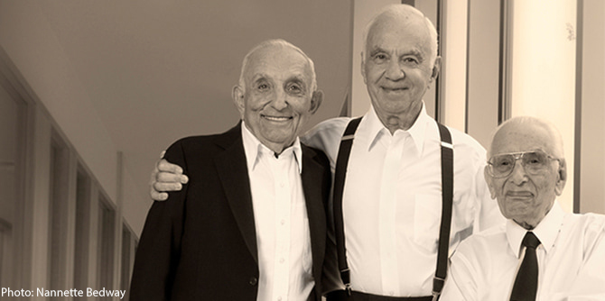

התרומה כוללת 1.75 מיליון שקלים לסיוע לתושבי ירושלים, כ-1.5 מיליון שקלים לסיוע לעולים חדשים שהתנדבו לשרת בצה"ל, וכמיליון שקלים לסיוע לחיילים בודדים ולפעילויות תרבות לחיילי צה"ל בבסיסיהם – בכלל זה העסקת אמנים מקומיים מכל גוני הקשת.
עוד תתרום הקרן מיליוני שקלים לחברה למתנ"סים, לשם עידוד פעילות עם אוכלוסיות בעלות צרכים מיוחדים; לבית איזי שפירא לילדים ובוגרים עם מוגבלויות; לילדים עם צרכים מיוחדים ולמטרות נוספות ומגוונות בחברה החרדית, בהן קידום למידה דיגיטלית בישיבות תיכוניות חרדיות; לקו חם לתמיכה נפשית וסוציאלית; לער"ן; לתמיכה בילדים בעלי הפרעות קשב; לעמותה למניעת אלימות נגד נשים, למרכזים של נשים נפגעות אלימות ולמרכזי מקלט לבני נוער בסיכון; להדרכת הורים ומורים ללמידה דיגיטלית; לתמיכה ברכישה ובהפצה של חבילות מזון לאוכלוסיות נזקקות; לסטודנטים ולתלמידים בחברה הבדואית בנגב ; לרכישת מחשבים לילדים בפריפריה כדי לאפשר למידה מרחוק; לצמצום פערים בחברה. כמו כן תעניק הקרן סיוע לערים ירושלים, אילת, באר שבע, ירוחם, נהריה וקרית ים, ולאזור הנגב המזרחי.
עוד תסייע הקרן ליוזמות שמטרתן להקל על אנשי הצוותים הרפואיים ועל בני משפחותיהם, לרבות תמיכה בצוותים הרפואיים בירושלים הנמצאים בהסגר או בבידוד עקב חשיפה לנגיף.
תרומה משמעותית נוספת תעניק הקרן להיערכות ליום שאחרי – להכשרת מובטלים לתעסוקה ולעידוד העסקת מובטלים בקרב מעסיקים.
קרן ג'ק, ג'וזף ומורטון מנדל פועלת בישראל זה שלושים שנה, ומשכנה בירושלים. עד היום השקיעה הקרן בישראל יותר ממיליארד שקלים וחצי. הקרן מפעילה תוכניות מנהיגות במסגרת יחידותיה: בית ספר מנדל למנהיגות חינוכית, מכון מנדל למנהיגות, מרכז מנדל למנהיגות בנגב ומרכז מנדל למנהיגות בצפון. תרומה זו מצטרפת לתרומות הרבות של הקרן לאורך השנים, המבטאות את מחויבותה לרווחת החברה בישראל ולמדינת ישראל כמדינה יהודית ודמוקרטית.

{kind=link}